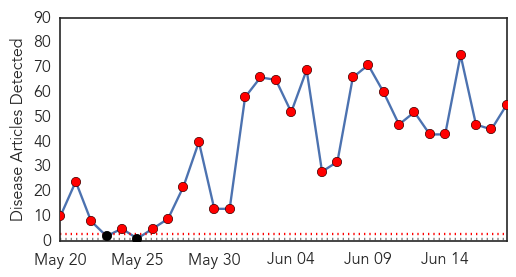
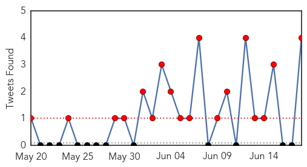
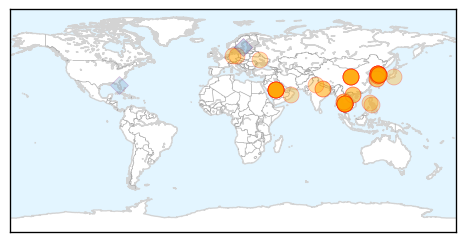
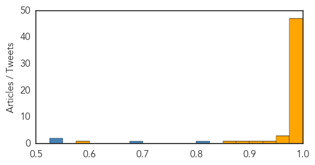
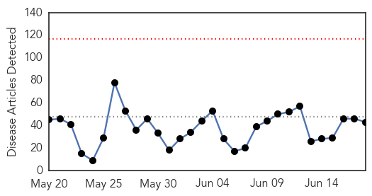
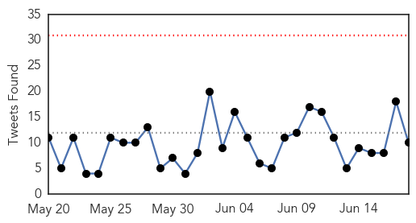
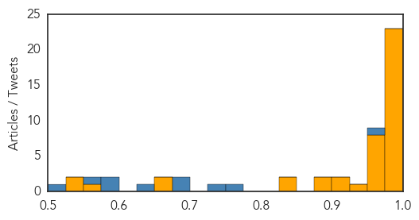

MERS
30-Day Web Trend
28 alerts, 0 warnings

30-Day Twitter Trend
18 alerts, 0 warnings

Article Locations
Article Confidences
Top Articles:
- 1.000
- 'Monitor passengers at airport to stop MERS entry into India'
- 1.000
- Medical experts: Prevent MERS entry in India, monitor passengers
- 1.000
- 'Monitor passengers at airport to stop MERS entry into India'
- 1.000
- Vigilance against acute respiratory infections
- 1.000
- 'Monitor passengers at airport to stop MERS entry into India'
- 1.000
- MERS: Thailand confirms first case of deadly virus in 75yo businessman
- 1.000
- what is the MERS outbreak in South Korea?
- 1.000
- S. Korea's MERS toll rises to 23 with three more deaths
- 1.000
- Vietnam sets up hot lines for MERS
- 1.000
- Vietnam sets up hot lines for MERS
- 1.000
- The MERS outbreak: an Asian perspective
- 0.999
- Thailand confirms first MERS case
- 0.999
- Thailand confirms first MERS case: health ministry
- 0.999
- Thailand confirms first Mers case
- 0.999
- MERS Research Outpaced by Outbreaks
- 0.999
- Public health experts outline strategies for managing MERS-CoV outbreak
- 0.999
- MERS coronavirus a bigger threat to Australia than Ebola, experts say
- 0.999
- Thailand reports first MERS case; South Korea adds 3
- 0.999
- Thailand confirms first MERS case
- 0.999
- MERS outbreak in Republic of Korea is ‘wake-up call’ for world: WHO
- 0.999
- 3 more people die from Coronavirus in South Korea
- 0.998
- Thailand confirms first Mers case as virus spreads in Asia
- 0.998
- WHO calls MERS outbreak a ‘wakeup call’
- 0.998
- Thailand confirms first MERS case: Health Ministry
- 0.998
- WHO concerned about MERS amid prevailing transmission uncertainties
- 0.998
- MERS outbreak in Korea not considered a public health emergency as death toll increases
- 0.997
- Thailand Confirms First MERS Case
- 0.997
- South Korea Death Toll Rises To 23, 3 New Cases Diagnosed
- 0.997
- Thailand Confirms First MERS Case
- 0.997
- MERS: Thailand confirms first case
- 0.997
- S.Korea reports 3 more MERS deaths, 3 infections - Xinhua
- 0.997
- Thailand confirms first MERS case after latest outbreak in South Korea
- 0.996
- Worried about MERS in South Korea? Visitors can (mostly) breathe easy.
- 0.996
- WHO reaffirms no ...｜Society｜WCT
- 0.996
- WHO: No evidence of MERS-CoV community spread in S.Korea
- 0.996
- Deadly respiratory virus MERS just spread to Thailand
- 0.996
- MERS Virus Migrates to One More Country. What Will Contain It? – Phenomena
- 0.995
- MERS reaches Thailand, says local media
- 0.995
- Moody's says MERS poses risk to South Korean economy, signs outbreak slowing
- 0.995
- Moody’s says MERS credit negative amid signs outbreak slowing
- 0.995
- Moody's says MERS poses risk to S.Korean economy, signs outbreak slowing
- 0.995
- WHO says MERS outbreak in S.Korea a `wakeup call`
- 0.995
- MERS poses risk to South Korean economy, warns Moody’s
- 0.995
- Health Ministry calls for continuous MERS-CoV efforts
- 0.994
- Moody's says MERS poses risk to South Korean economy, signs outbreak slowing
- 0.990
- Lack of a MERS vaccine frustrates scientists
- 0.988
- PM Prayut: 'No MERS patient in Thailand yet'
- 0.972
- South Korean President urges national effort against MERS virus
- 0.959
- MERS death toll reaches 23; WHO says rate of infection slowing
- 0.956
- WHO: Risk of MERS to public is 'considered low'
Showing top 50 articles...
Top Tweets:
- 0.920
- AFD Blog `Korea MERS Outbreak: 165 Cases, 23 Deaths' MERS-CoV http://t.co/yzhalMwzfj
- 0.815
- RT: MERS coronavirus a bigger threat to Australia than Ebola, experts say: An infectious diseases expert has warne... http://…
- 0.527
- RT: The most recent developments in MERS-CoV: first confirmed case in Thailand. South Korea reports a total of 164 cases http://t…
- 0.527
- RT: The most recent developments in MERS-CoV: first confirmed case in Thailand. South Korea reports a total of 164 cases http://t…
- 0.520
- All MERS-CoV cases in S Korea are associated with healthcare facilities; very low infection risk in other settings http://t.co/5E13KNsQcO
Ebola
30-Day Web Trend
0 alerts, 0 warnings

30-Day Twitter Trend
0 alerts, 0 warnings

Article Locations

Article Confidences
Top Articles:
- 1.000
- The Middle-East Respiratory Syndrome- the new epidemic
- 1.000
- Ebola Doesn’t Disappear at Zero and Neither Will We
- 0.999
- PHE study finds Ebola virus mutated slower than first thought - News Press Release
- 0.999
- Ebola cases dip slightly, but hot spots persist
- 0.999
- WHO chief says no mutation of MERS virus found in S. Korea
- 0.999
- PHE study finds Ebola virus mutated slower than first thought
- 0.998
- Tracing Ebola’s Evolution
- 0.998
- Ebola study to examine long term effects in survivors commences in Liberia
- 0.997
- EU-funded study into virus mutations marks breakthrough in fight against Ebola
- 0.996
- Disease infects 160 people but is not a 'global emergency'
- 0.996
- Disease infects 160 people but is not a 'global emergency'
- 0.996
- Staying at Zero Keeping Ebola Out of Liberia
- 0.996
- Study finds Ebola virus mutated slower than first thought
- 0.996
- First Ebola Epidemic May Have Happened in Ancient Greece
- 0.995
- Liberia dismisses speculations of new Ebola outbreak
- 0.994
- Study: Ebola virus mutated more slowly than thought
- 0.993
- The World On Arirang
- 0.992
- Britain is Ready for MERS Virus, Says Public Health Body
- 0.992
- 7 lessons from the MERS outbreak in South Korea
- 0.988
- Ebola DNA sequenced to track outbreak (Wired UK)
- 0.988
- UK expert warns of disaster if lessons are not learned from Ebola outbreak
- 0.987
- Customs ramping up airport efforts to keep out deadly MERS virus
- 0.985
- EU-funded Study Into Virus Mutations Marks Breakthrough In Fight Against Ebola
- 0.973
- Minister Of Health’s Statement to Parliament on proposed anti-Ebola Vaccine Clinic Trials
- 0.970
- Statement to Parliament on the proposed anti-Ebola vaccine clinical trials in Ghana
- 0.970
- Army Researchers Work to End Ebola Virus
- 0.970
- Sierra Leone: The Ebola crisis in West Africa - Humanitarian Exchange Magazine Issue 64
- 0.969
- Statement to Parliament on the proposed anti-Ebola vaccine clinical trials in Ghana
- 0.967
- Ebola vaccine test has not started in Ghana – Segbefia
- 0.957
- Study shows how Ebola has evolved during the West Africa outbreak
- 0.951
- Doctor who fought Ebola inspires Academy of Notre Dame grads
- 0.930
- MERS, hand sanitizers, and Ebola
- 0.920
- The Ebola crisis in West Africa - Humanitarian Exchange Magazine Issue 64 - Sierra Leone
- 0.901
- Ghana launches public campaign on safety of Ebola vaccine trial
- 0.891
- Fr. Peter Konteh of Caritas Freetown on the Needs of Ebola Orphans Vatican Radio
- 0.875
- After the Ebola Epidemic... What's Next for Africa?
- 0.836
- Ebola monitoring up in Virginia
- 0.829
- British Embassy hosts afternoon tea to thank Korean medical personnel
- 0.674
- Ebola Vaccine trial sensitisation starts today
- 0.665
- There shall be no wrong doing under our watch: WHO on ebola trial in Ghana
- 0.554
- Women Group Donates Items to Ebola Orphans in Liberia
- 0.546
- The Liberian Observer
- 0.527
- Health Ministry begins public education on Ebola vaccine trial
Top Tweets:
- 0.948
- Study shows how Ebola evolved during the outbreak in West Africa - Medical Xpress http://t.co/4GU149zjD3
- 0.926
- Temporal and spatial analysis of the 2014-2015 Ebola virus outbreak in West Africa http://t.co/esPhCG6c2v
- 0.923
- Ebola Vaccine trial sensitisation starts today - GhanaWeb http://t.co/P15ro2IB2L ebola EVD
- 0.916
- Ebola quarantine to continue at Fort Monmouth - Asbury Park Press http://t.co/sbCUwfFhnz ebola EVD
- 0.916
- Ebola quarantine to continue at Fort Monmouth - Asbury Park Press http://t.co/Xg5mBqxpKl ebola EVD
- 0.898
- Ebola showed aid delivery desperately needs an overhaul - Reuters http://t.co/7g2Wvz85QH ebola EVD
- 0.893
- Ebola showed aid delivery desperately needs an overhaul - Yahoo News http://t.co/WlJXy8NbPM ebola EVD
- 0.888
- Ebola Update: 27,309 confirmed, probable & suspected cases reported in 3 most affected countries, with 11,169 deaths. EbolaResponse
- 0.882
- Milwaukee receives $111000 grant for Ebola preparedness - WDJT http://t.co/jidUhSY9sS ebola EVD
- 0.806
- EU team successfully maps genetic evolution of Ebola virus - http://t.co/0xanftM8rn http://t.co/OqVnjoR1g5 ebola EVD
- 0.805
- New Disease Control Center to Develop Ebola Response Model - http://t.co/NaiI6Jl8yj http://t.co/Oc33JsvaYz ebola EVD
- 0.785
- Toddler playing with fruit bat sparked Ebola outbreak - http://t.co/9p21lKLIva http://t.co/pTtMAEJ8bq ebola EVD
- 0.737
- Faith, Fear, and Politics: PW Talks with Ebola Survivor Kent Brantly - Publishers Weekly http://t.co/OL4rqAJnNd ebola EVD
- 0.708
- The Ebola crisis in West Africa - Issue 64 - HumanitarianExchangeMagazine http://t.co/pvhDl2H8k8
- 0.658
- 18 June - news overview on avianflu avianinfluenza Ebola EbolaResponse MERS http://t.co/2HN1WN0tDu
- 0.643
- 24 new Ebola cases confirmed in Guinea & SierraLeone during the week to 14 June Situation Report http://t.co/eNQWOqPAOT
- 0.621
- Historian argues ebola was behind infamous Plague of Athens 2.4k years ago - Daily Mail http://t.co/RSu3JrwZ7B ebola EVD
- 0.575
- .@WHO Ebola situation report provides an up-to-date overview of outbreak http://t.co/RQlxZFUuUT
- 0.569
- Staying at zero: Keeping Ebola out of Liberia http://t.co/NAyG2wl1M4
- 0.542
- mdpiviruses Evaluation of Signature Erosion in Ebola Virus Due to Genomic Drift and Its Impact on http://t.co/m3JIp4UF7h